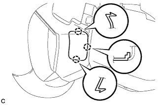
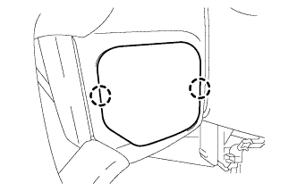
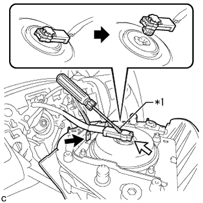
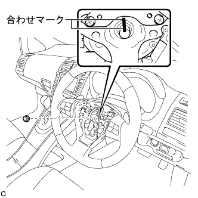
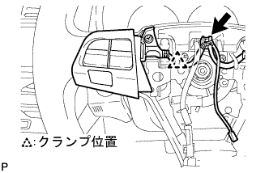
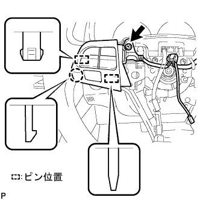
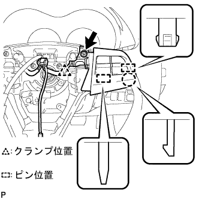

Steering Pad Switch Assembly (3-spoke Steering Wheel) Removal |
| 1. Handling and Work Precautions |
)| 2. Check Front Wheels Facing Straight Ahead (w/ Shift Paddle Switch) |
| 3. Disconnect Battery Negative Terminal |
)| 4. Remove Steering Wheel Cover Lower NO.3 |
 |
Steering Wheel Assembly 3 Spoke:
Disengage the 3 claws and remove steering wheel cover LWR No.3.
 |
Steering Wheel Assembly 4 Spoke:
Disengage the 2 claws and remove steering wheel cover LWR No.3.
| 5. Remove Steering Wheel Cover Lower NO.2 |
 |
Steering Wheel Assembly 3 Spoke:
Disengage the 3 claws and remove steering wheel cover LWR No.2.
 |
Steering Wheel Assembly 4 Spoke:
Disengage the 2 claws and remove steering wheel cover LWR No.2.
| 6. Remove Horn Button Assembly |
Make sure that the ignition switch is OFF.
Check that the battery negative terminal is disconnected.
Using a flat-tip screwdriver, push in the 2 torsion springs shown in the illustration and disengage the 2 pins.

Pull the horn button assembly toward the rear of the vehicle.
 |
Using a thin flat-tip screwdriver wrapped with protective tape, pull up the lock of the airbag connector to release it.
| *1 | Protective Tape |
Disconnect the airbag connector and horn connector, and remove the horn button assembly.
| 7. Remove Steering Wheel Assembly (w/ Shift Paddle Switch) |
Operate the tilt and telescopic mechanisms to fix the steering column assembly in its fully extended and fully raised position.
 |
Remove the nut and put matchmarks on the steering wheel assembly and steering column assembly.
 |
Using SST, remove the steering wheel assembly.
| 8. Remove Steering Pad Switch Assembly (w/o Shift Paddle Switch) |
 |
Disconnect the connector from the spiral cable and disengage the clamp.
 |
Remove the screw.
Disengage the 2 pins and claw, and separate the steering pad switch LH side from the steering wheel assembly.
 |
Remove the screw.
Disengage the clamp.
Disengage the 2 pins and claw, detach the steering pad switch RH side from the steering wheel assembly, and remove the steering pad switch assembly.
| 9. Remove Steering Pad Switch Assembly (w/ Shift Paddle Switch) |
 |
Disconnect the connector and disengage the clamp.
 |
Remove the screw.
Disengage the 2 pins and claw, and separate the steering pad switch LH side from the steering wheel assembly.
 |
Remove the screw.
Disengage the clamp.
Disengage the 2 pins and claw, detach the steering pad switch RH side from the steering wheel assembly, and remove the steering pad switch assembly.